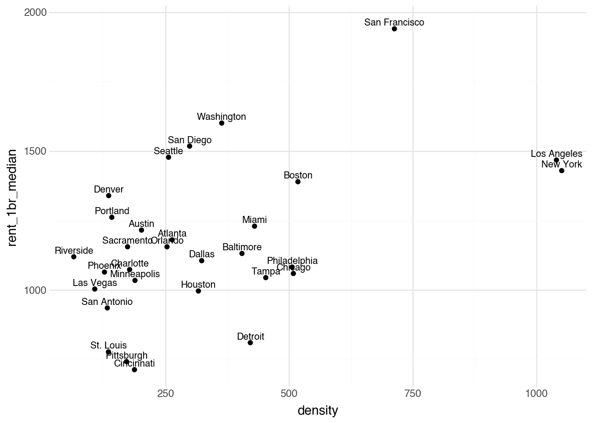
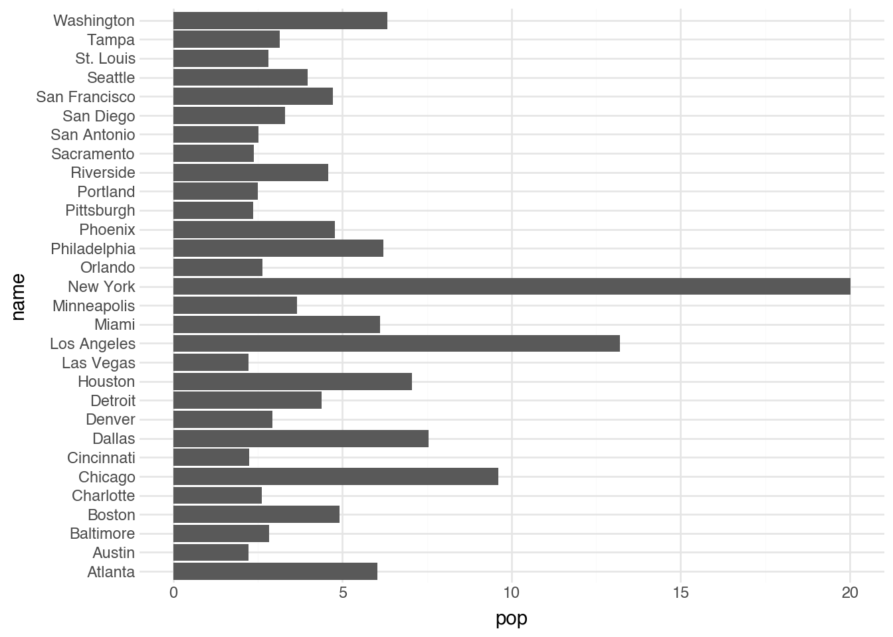
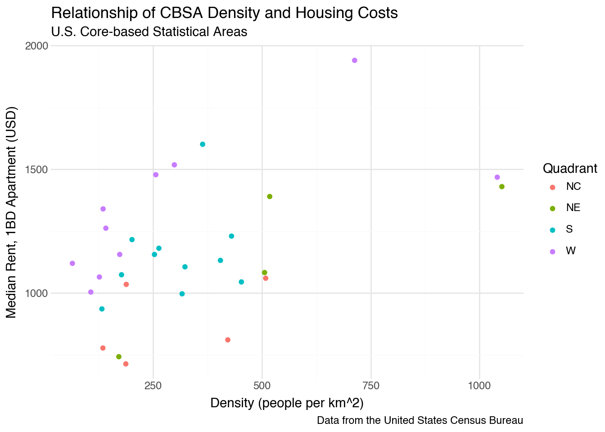

As we outlined in Chapter 1, the concept of exploratory data analysis (EDA) is key to our approach. As a result, data visualization is one of the most important tasks and powerful tools for the analysis of data. We start our study of exploratory data analysis with visualization because it offers the best immediate payoff for how statistical programming can help understand datasets of any size. Visualizations also have the benefit for those new to programming because it is relatively easy to verify that our code is working. We can just look at the output and see if the resulting plot is what we expected. Finally, data visualizations can be useful for even very small collections of data.
In this chapter, we will learn and use the plotnine package for building informative graphics [1][2]. The package makes it easy to build fairly complex graphics in a way that is guided by a general theory of data visualization. The only downside is that, because it is built around a theoretical model rather than many one-off solutions for different tasks, it has a somewhat steeper initial learning curve. The chapter is designed to get us started using the package to make a variety of different data visualizations.
The core idea of the grammar of graphics is that visualizations are composed of independent layers. The term “grammar” is used to describe visualizations because the theory builds connections between elements of the dataset to elements of a visualization. It builds up complex elements from smaller ones, much like a grammar provides relations between words in order to generate larger phrases and sentences. To describe a specific layer, we need to specify several elements. First, we need to specify the dataset from which data will be taken to construct the plot. Next, we have to specify a set of mappings called aesthetics that describe how elements of the plot are related to columns in our data. For example, we often indicate which column corresponds to the horizontal axis of the plot and which one corresponds to the vertical axis of the plot. It is also possible to describe elements such as color, shape, and size of elements of the plot by associating these quantities with columns in the data. Finally, we need to provide the geometry that will be used in the plot. The geometry describes the kinds of objects that are associated with each row of the data. A common example is the points geometry, which associates a single point with each observation.
We can show how to use the grammar of graphics by starting with the CBSA data that we introduced in the previous chapter, where each row is associated with a particular metropolitan region in the United States. The first plot we will make is a scatter plot that investigates the relationship between the median price of a one-bedroom apartment and the population density of the metropolitan region. In the language of the grammar of graphics, we can start to describe this visualization by providing the variable name in Python of the data (cbsa). Next, we associate the horizontal axis (called the x aesthetic) with the column in the data named density. The vertical axis (the y aesthetic) can similarly be associated with the column named rent_1br_median. We will make a scatter plot, with each point on the plot describing one of our metropolitan regions, which leads us to use a point geometry. Our plot will allow us to understand the relationship between city density and rental prices.
Figure 2.1: Diagram of how the elements of the grammar of graphics correspond to elements of the code and visualization.
In Python, we need to use some special functions to indicate all of this information and to instruct the program to produce a plot. We start by indicating the name of the underlying dataset and using it to create a special object called ggplot that indicates that we want to create a data visualization. The plot itself is created by adding—literally, with the plus sign—the function geom_point. This function indicates that we want to add a points geometry to the plot. Inside of the geometry function, we apply the function aes (short for aesthetics), which indicates that we want to specify the mappings between components of the plot and column names in our dataset. Code to write this using the values described in the previous paragraph is given below.
Plot of the largest 30 core-based statistical areas in the United States, showing their density and the median price to rent a one-bedroom apartment from the 2021 American community survey.
Running the code above from a Quarto document will show the desired visualization right below the block of code. In this plot, each row of our dataset, a CBSA region, is represented as a point in the plot. The location of each point is determined by the density and median rent price for a one-bedroom apartment in the corresponding region. Notice that Python has automatically made several choices for the plot that we did not explicitly indicate in the code. For example, the range of values on the two axes, the axis labels, the grid lines, and the marks along the grid. Python has also automatically picked the color, size, and shape of the points. While the defaults work as a good starting point, it is often useful to modify these values; we will see how to changes these aspects of the plot in later sections of this chapter.
Scatter plots are typically used to understand the relationship between two numeric values. What does our first plot tell us about the relationship between city density and median rent? There is not a clear trend between these two variables. Rather, the plot of these two economic metrics clusters the regions into several groups. We see a couple of regions with a very high density but only moderately large rental prices, one city with unusually high rental prices, and the rest of the regions fairly uniformly distributed in the lower-left corner of the plot. Let’s see if we can give some more context to the plot by adding additional information.
2.2 Text Geometry
A common critique of computational methods is that they obscure a closer understanding of each individual object of study in an attempt to search for numeric patterns. This is certainly an important caution; computational analysis of humanities data should always be paired with close analysis. However, it does not always have to be the case that visualizations reduce complex collections to a few numerical summaries. This is particularly so when working with a dataset that has a relatively small number of observations. Looking back at our first scatter plot, how could we recover a closer analysis of individual cities while also looking for general patterns between the two economic variables? One option is to add labels indicating the names of the regions. These names would let anyone looking at the plot to adding their own understanding of the individual regions as an additional layer of information as they interpret the plot.
Adding the names of the regions can be done by using another type of geometry called a text geometry. This geometry is created with the function geom_text. For each row of a given dataset, this geometry adds a small textual label. As with the point geometry, it requires us to specify which columns of our data correspond to the x and y aesthetics. These values tell the plot where to place the label. Additionally, the text geometry requires an aesthetic called label that indicates the column of the dataset that the label should take its text from. In our case, we will use the column called name to make textual labels on the plot. A reminder that this is a column name from the data that we loaded in. The code block below produces a text label plot by changing the geometry type and adding the additional aesthetic from the previous example.
Plot of the largest 30 core-based statistical areas in the United States, showing their density and the median price to rent a one-bedroom apartment from the 2021 American Community Survey. Here, short descriptive names of the regions are included.
The plot generated by the code allows us to now see which region has the highest rents (San Francisco). And, we can identify which regions have the highest density (New York and Los Angeles). We can also identify regions such as Detroit that are relatively dense but inexpensive or regions such as Denver that are not particularly dense but still one of the more expensive regions to rent in. While we have added only a single additional piece of information to the plot, each of the labels uniquely identifies each row of the data. This allows anyone familiar with metropolitan regions in the United States to bring many more characteristics of each data point to the plot through their own knowledge. For example, while the plot does not include any information about overall population, anyone who knows the largest cities in the US can use the plot to see that the two most dense cities (New York and Los Angeles) are also the most populous. And, while the plot does not have information about the location of the regions, if we know the general geography of the country, it is possible to see that many of the cities that are expensive but not particularly dense (Portland, Denver, Seattle, and San Diego) are on the West Coast. These observations point to the power of including labels on a scatter plot.
While the text plot adds additional contextual information compared to the scatter plot, it does have some shortcomings. Some of the labels for points at the edges of the plot fall off and become truncated. Labels for points in the lower-left corner of the plot start to overlap one another and become difficult to read. These issues will only grow if we increase the number of regions in our dataset. Also, it is not entirely clear what part of the label corresponds to the density of the cities. Is it the center of the label, the start of the label, or the end of the label? We could add a note that the value is the center of the label, but that becomes somewhat cumbersome to have to constantly remember and remind ourselves and others about.
To start addressing these issues, we can add the points back into the plot with the labels. We could do this in Python by adding the two geometry layers (geom_point and geom_text) one after the other. This will make it more clear where on the x-axis each region is associated to, but at the same time will make the names of the cities even more difficult to read. To fix the second problem, we will replace the text geometry with a different geometry called geom_text_repel. It also places labels on the plot, but has special logic that avoids intersecting labels. Instead, labels are moved away from the data points and connected (when needed) by a line segment. As with the text geometry, the text repel geometry requires specifying x, y, and label aesthetics. Below is the code to make both of these modifications.
from adjustText import adjust_textimport matplotlib.pyplot as plt# Note: plotnine doesn't have geom_text_repel, so we'll use a workaround with regular geom_text# For production code, you might want to use matplotlib directly or another solution(ggplot(cbsa) + geom_point(aes(x='density', y='rent_1br_median')) + geom_text(aes(x='density', y='rent_1br_median', label='name'), nudge_y=50, size=8))

Plot of the largest 30 core-based statistical areas in the United States, showing their density and the median price to rent a one-bedroom apartment from the 2021 American community survey. Here, short descriptive names of the regions are included but offset from the points to make the plot easier to read.
The output of the plot with the points and text labels shows that we have attempted to avoid writing labels that intersect one another by nudging them slightly. The points indicate the specific values of the density and median rents, while the labels provide context about which metropolitan area each point represents. Some of the labels do still become a bit busy in the lower left-hand corner; this could be fixed by making the size of the labels slightly smaller, which we will learn how to do later in the chapter. Once the number of points becomes larger, it will eventually not be possible to label all of the points. Several strategies exist for dealing with this, such as only labeling a subset of the points. We will see these techniques as they arise in our examples. The plotnine package and communities online have an entire ecosystem of strategies for increasing interpretability and adding context to plot, providing strategies for using the exploratory and visual power of data visualization to garner insights from humanities data.
2.3 Lines and Bars
There a large number of different geometries supplied by the plotnine package, in addition to the even larger collection of extensions by other Python packages. We will look at two other types of geometries in this section that allow us to investigate common relationships in the columns of a dataset. Other geometries will be discussed throughout the book as the need arises, and the full list of geometries can be found in the plotnine package’s documentation.
Figure 2.2: Examples of common geometries used in the grammar of graphics.
For a moment, we will switch gears and look at the food prices dataset, which was introduced in the previous chapter. This data contains one row for every year from 1870 through 2015, with relative prices for thirteen different food items across the United States [3]. Consider a visualization showing the change in the price of tea over the 146 years in the dataset. We could create a scatter plot where each point is a row of the data, the x aesthetic captures the year of each record, and the y aesthetic measures the relative cost of tea. This visualization would be fine and could roughly help us understand the changes in relative prices for this commodity. A common visualization type, however, for data of this format is a line plot, where the price in each year is connected by a line to the price in the subsequent year. To create such a plot, we can use the geom_line geometry. This is most commonly used when the horizontal axis measures some unit of time, but can represent other quantities that we expect to continuously and smoothly change between measurements on the x-axis. The line geometry requires the same aesthetics as the point geometry and can be created with the same syntax, as shown in the following block of code.
Plot of the price of tea in standardized units (100 is the price in 1900) over time.
The output of this visualization allows us to see the change over time of the tea prices. Notice that the relative price decreased fairly steadily from 1870 through to 1920. It had a few sudden drops and reversals in the 1920s and 1930s, before increasing again in the 1950s. The relative cost of tea then decreased again fairly steadily from the mid 1950s through to the end of the data range in 2015.
Another common usage of a visualization is to see the value of a numeric column of the dataset relative to a character column of the dataset. It is possible to represent such a relationship with a geom_point layer. However, it is often more visually meaningful to use a bar for each category and the height or length of the bar representing the numeric value. This type of plot is most common when showing the counts of different categories, something we will see in the next chapter, but can also be used in any situation where a numeric value is associated with different categories. To create a plot with bars we use the geom_col function, providing both x and y aesthetics. Python will automatically create vertical bars if we have a character variable associated with the x aesthetic and horizontal bars if we have one in the y aesthetic. Putting the character variable on the y-axis usually makes it easier to read the labels, so we recommend it in most cases. In the code block below, we have the commands to create a bar plot of the population in each region from the CBSA dataset.
(ggplot(cbsa) + geom_col(aes(x='pop', y='name')))

Plot of the population of the largest 30 core-based statistical areas in the United States, showing their population from the 2021 American community survey.
One of the first things that stands out in the output is that the regions are ordered alphabetically from bottom to top. The visualization would be much more useful and readable if we could reorder the categories on the y-axis. This is also something that we will address in the following chapter. For now, we can see how plotnine is offering a range of plot types to see our data from different angles. We can add additional context through additional aesthetics.
2.4 Optional Aesthetics
In the previous sections, we have shown how visualizations can be built out of geometry layers, where each geometry is associated with a dataset and a collection of variable mappings known as aesthetics. The point, line, and bar geometries require x and y aesthetics; the text geometry also required an aesthetic named label. In addition to the required aesthetics, each geometry type also has a number of optional aesthetics that we can use to add additional information to the plot. For example, most geometries have a color aesthetic. The syntax for describing this is exactly the same as with the required aesthetics: we place the name of the aesthetic followed by the name of the associated variable name. Let’s see what happens when we add a color aesthetic to our scatter plot by relating the column called quad to the aesthetic named color. Below is the corresponding code.
Plot of the largest 30 core-based statistical areas in the United States, showing their density and the median price to rent a one-bedroom apartment from the 2021 American community survey. Here, the points are colored based on the quadrant in which the city is found in the United States.
The result of associating a column in the dataset with a color produces a new variation of the original scatter plot. We have the same set of points and locations on the plot, as well as the same axes. However, now each color has been automatically associated with a region and every point has been colored according to the region column associated with each row of the data. The mapping between colors and region names is shown in an automatically created legend on the right-hand side of the plot. The ability to add additional information to the plot by specifying a single aesthetic speaks to how powerful the grammar of graphics is in terms of quickly producing informative visualizations of data. In the first edition of this text, which used the built-in graphics system in Python, it was necessary to write nearly a dozen lines of code to produce a similar plot. Now that we are able to use the plotnine package, this process has been greatly simplified.
In the previous example we changed the color aesthetic from the fixed default of black to a color that changes with another variable. It is also possible to specify an alternative, fixed value for any aesthetic. We can draw on the color names available in Python. For example, we might want to change all of the points to be a shade of green. This can be done with a small change to the function call. To do this, we set the color aesthetic to the name of a color, such as “red”. However, unlike with variable aesthetics, the mapping needs to be done outside of the aes() function, but still within the geom_* function. Below is an example of the code to redo our plot with a different color; we use a color called “olivedrab”, which in print is much more aesthetically pleasing than its name might at first suggest.
Plot of the largest 30 core-based statistical areas in the United States, showing their density and the median price to rent a one-bedroom apartment from the 2021 American community survey. The color of the points has been changed to a dark green called ‘olivedrab’.
While minor, the changed notation for specifying fixed aesthetics is a common source of confusing errors for users new to the geometry of graphics, so be careful to follow the correct syntax of arguments as in the code above. One can interchange the fixed and variable aesthetic commands, and the relative order should not effect the output. Just be sure to put fixed terms after finishing the aes() command.
While each geometry can have different required and optional aesthetics, the plotnine package tries as much as possible to use a common set of terms for the aesthetics in each geometry. We have already seen the x, y, and label aesthetics in the previous sections, and just introduced the color aesthetic. Color can also be used to change the color of a line plot or the color of the font in a text geometry. For applications such as the bar plot, we might want to modify both the border and interior colors of the bars; these are set separately by the color and fill aesthetics, respectively. The size aesthetic can be used to set the size of the points in a scatter plot or the font-size of the labels in a text geometry. The shape aesthetic is used to modify the shape of the points. An aesthetic named alpha controls the opacity of points, with a value of 1 being the default and 0 being completely invisible. Some of these, such as alpha, are most frequently used with fixed values, but if needed, almost all can be given a variable mapping as well.
2.5 Scales
Python makes many choices for us automatically when creating any plot. In our example above, in which we set the color of the points to follow another variable in the dataset, Python handles the details of how to pick the specific colors and sizes. It has figured how large to make the axes, where to add tick marks, and where to draw grid lines. Letting Python deal with these details is convenient because it frees us up to focus on the data itself. Sometimes, such as when preparing to produce plots for external distribution, or when the default are particularly hard to interpret, it is useful to manually adjust these details. This is exactly what scales were designed for.
Each aesthetic within the grammar of graphics is associated with a scale. Scales detail how a plot should relate aesthetics to the concrete, perceivable features in a plot. For example, a scale for the x aesthetic will describe the smallest and largest values on the x-axis. It will also code information about how to label the x-axis. Similarly, a color scale describes what colors corresponds to each category in a dataset and how to format a legend for the plot. In order to change or modify the default scales, we add an additional function to the code. The order of the scales relative to the geometries do not effect the output; by convention, scales are usually grouped after the geometries.
For example, a popular alternative to the default color palette shown in our previous plot is the function scale_color_cmap_d(). It constructs a set of colors that is color-blind friendly, looks nice when printed in black and white, and displays fine on bad projectors. After specifying that the color of a geometry should vary with a column in the dataset, we specify this color scale by adding the function as an extra line in the plot. An example is shown in the following code.
Plot of the largest 30 core-based statistical areas in the United States, showing their density and the median price to rent a one-bedroom apartment from the 2021 American community survey. Here, the points color based on the quadrant in which the city is found in the United States, with a color-blind friendly color scale.
The output shows that the colors are now given by a range from dark purple to bright yellow in place of the rainbow of colors in the default plot. As with the categories in the bar plot, the ordering of the unique colors is given by putting the categories in alphabetical order. Changing this requires modifying the dataset before passing it to the plot, something that we will discuss in the next chapter. Note that the _d at the end of the scale function indicates that the colors are used to create a set of mappings for a character variable (it stands for “discrete”). There is also a complimentary function scale_color_cmap() that produces a similar set of colors when making the color of the points change according to a numeric variable. The code below demonstrates the continuous case, where the population is treated as a numeric variable.
Many other scales exist to control a variety of aesthetics. For example, scale_size_area can be used to make the size of the points proportional to one of the other columns in a dataset. There are also several scales to control the x and y axes. For example, we can add scale_x_log10() and scale_y_log10() to a plot to produce values on a logarithmic scale, which can be very useful when working with heavily skewed datasets. We will use this in later chapters as needed.
The default scale for the x-axis is called scale_x_continuous. A corresponding function scale_y_continuous is the default for the y-axis. Adding these to a plot on their own has no visible effect. However, there are many helpful optional arguments that we can provide to these functions that change the way a plot is displayed. Setting breaks within one of these scales tells Python the number of labels to put on the axis. Also, making minor_breaks equal to None turns off the minor grid lines. We can set the value limits to a pair of numbers in order to describe the starting and ending range on a plot. Below is the code to produce a plot which shows the same data as our original scatter plot, but now with modified grid lines, axis labels, and vertical range.
Plot of the largest 30 core-based statistical areas in the United States, showing their density and the median price to rent a one-bedroom apartment from the 2021 American community survey. Here, we adjust the standard breaks and limits on the x- and y-axes.
Finally, there are two special scale types that can be useful for working with colors. In some cases we may already have a column in our dataset that explicitly describes the color of an observation; here, it would make sense to use these colors directly. To do that, we can add the scale scale_color_identity to the plot. Another type of scale that can be useful for colors is scale_color_manual. Here, it is possible to describe exactly which color should be used for each category. Below is the syntax for producing manually defined colors for each region in the CBSA dataset.
Using manual colors is generally advisable in the case where there are well-known colors associated with the groups in the dataset. For example, when plotting data about political parties it may be helpful to use the colors traditionally associated with each party. The documentation for plotnine includes additional ways to customize visualizations using a variety of alternative scales.
2.6 Labels and Themes
Throughout this chapter, we have seen a number of ways to create and modify data visualizations. One thing that we did not cover was how to label our axes. While many data visualization guides often stress the importance of labeling axes, it is often best to simply use the default labels provided by Python during the exploratory phase of analysis. These are useful for a number of reasons. First, they require minimal effort and make it easy to tweak axes, variables, and other settings without spending time tweaking with the labels. Secondly, the default labels use the variable names in our dataset. When writing code this is exactly what we need to know about a variable to use it in additional plots, models, and data manipulation tasks. Of course, once we want to present our results to others, it is essential to provide more detailed descriptions of the axes and legends in our plot. Fortunately, these can be added directly using the grammar of graphics.
In order to change the labels in a plot, we can use the labs function as an extra part of our plot. Inside the function, we assign labels to the names of aesthetic values that we want to describe. Leaving a value unspecified will keep the default value in place. Labels for the x-axis and y-axis will be placed on the sides of the plot. Labels for other aesthetics such as size and color will be placed in the legend. We can also add title, subtitle, and a caption value to the labs command to add addition information to describe the plot as a whole. Here is an example of our scatter plot with color that includes a variety of different labels.
(ggplot(cbsa) + geom_point(aes(x='density', y='rent_1br_median', color='quad')) + labs( x='Density (people per km^2)', y='Median Rent, 1BD Apartment (USD)', color='Quadrant', title='Relationship of CBSA Density and Housing Costs', subtitle='U.S. Core-based Statistical Areas', caption='Data from the United States Census Bureau' ))

Plot of the largest 30 core-based statistical areas in the United States, showing their density and the median price to rent a one-bedroom apartment from the 2021 American community survey. Here, we add custom labels and titles to the plot.
Another way to prepare our graphics for distribution is to modify the theme of a plot. Themes effect the way that the plot elements such as the axis labels, ticks, and background look. By default throughout this book, we have set the default plot to theme_minimal. We think that this is a great choice for the exploration of a dataset. As the name implies, it removes most of the clutter of other choices while keeping grid lines and other visual cues to help with interpretation. When presenting information for external publication, we often prefer to use a theme that is based on the work of Edward Tufte, a well-known scholar in the field of data visualization. To set the theme, we can add theme_minimal() or another theme function to our plot, as in the example below.
# Set minimal theme as defaulttheme_set(theme_minimal())
<plotnine.themes.theme_minimal.theme_minimal at 0x10b6cfe00>
Now, whenever we construct a plot it will use the newly assigned theme. Minimal themes are designed to use as little “ink” as possible, thus focusing the reader on the data [4]. They can be a bit too minimal when first exploring the dataset, but can be a great tool for presenting our results. Again, there are many resources online to customize according to our needs.
2.7 Conventions for Graphics Code
As a final point, note that there is a convention for simplifying the plotting command. Often, each layer will use the same x and y variables. It is possible to specify these just once in the ggplot function, and they will be used by default in all other layers. Also, we can drop the x = and y = if we put these options first. This can greatly simplify the amount of code needed to create a plot, therefore making the code easier to edit and understand. Below is an example of layering together the geom_point and geom_text with this inheritance structure.
These changes are optional. It is perfectly fine to write them as we did earlier. It is important, though, to be able to recognize these conventions as we will make use of this convention throughout the rest of the book. We will also see this format when searching through documentation or help pages online. Finally, in the first chapter we stressed the importance of following a few style guidelines about our code. Here are three additional formatting rules that apply specifically to building graphics in Python:
indent the ggplot command by four spaces when inside parentheses
indent every line below ggplot by four spaces
always add each layer of a plot as a new line
As with our original set of style guidelines, we think using these formatting rules will make life a lot easier. We will model their application in the code throughout the book.
2.8 Extensions
We have covered the most important elements—data, geometries, aesthetics, scales, themes—that make up data visualizations using the grammar of graphics as implemented in plotnine. At the end of Chap. 9, we will show how to make use of facets to show multiple plots next to one another. The three remaining elements are position, statistics, and coordinate systems. These are not as crucial to the basic usage of the grammar of graphics, but can be useful for more advanced applications or in specific situations where the defaults are not ideal. More details can be found in the plotnine documentation [1]. While we have covered the idea behind the main other elements, we have only shown a smaller number of the larger set of available geometries and scales.
A full set can be found in the (continually updated) documentation pages and tutorials available online.
In addition to the programming aspects, there are many great references that can help inspire new approaches to data visualization. Classic and still very relevant references are Edward Tufte’s texts on data visualization [4][5][6][7][8]. Bremer and Wu’s Data Sketches provides a more in-depth study of several complex datasets and the kinds of modern, often interactive, visualizations they used to study them [9]. A more playful, but just as useful, take on data visualization is given in Dear Data, by Lupi and Posavec [10]. They show over one-hundred hand sketched data visualizations that were originally shared as postcards. These help imagine the possibilities that are not overly constrained to what is computationally easy to write. Finally, Cole Nussbaumer Knaflic’s Storytelling with Data, despite having a subtitle referencing business applications, provides a very humanistic approach to exploratory data analysis through visualizations along with a lot of useful and practical advice [11]. The field of data visualization is large and quickly growing. These are just a few examples that we have personally found to be useful references and sources of great practices and ideas.
References
[1]
Lavanya, A, Gaurav, L, Sindhuja, S, Seam, H, Joydeep, M, Uppalapati, V, Ali, W and SD, V S (2023 ). Assessing the performance of python data visualization libraries: A review. Int. J. Comput. Eng. Res. Trends. 10 28–39
[2]
Wilkinson, L (2012 ). The Grammar of Graphics. Springer
[3]
Jacks, D S (2019 ). From boom to bust: A typology of real commodity prices in the long run. Cliometrica. Springer. 13 201–20
[4]
Tufte, E (1987 ). The Visual Display of Quantitative Information. Graphics Press
[5]
Tufte, E (1990 ). Envisioning Information. Graphics Press
[6]
Tufte, E (1997 ). Visual Explanations: Images and Quantities, Evidence and Narrative. Graphics Press
[7]
Tufte, E (2006 ). Beautiful Evidence. Graphics Press
[8]
Tufte, E (2020 ). Seeing with Fresh Eyes: Meaning, Space, Data, Truth. Graphics Press
[9]
Bremer, N and Wu, S (2021 ). Data Sketches: A Journey of Imagination, Exploration, and Beautiful Data Visualizations. CRC Press
[10]
Lupi, G and Posavec, S (2016 ). Dear Data. CRC Press
[11]
Knaflic, C N (2015 ). Storytelling with Data: A Data Visualization Guide for Business Professionals. John Wiley & Sons
{kind=link}
{kind=link}